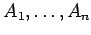
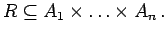
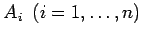
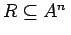
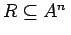

Inhalt Index DeskTop Bronstein

 Algebra und Diskrete Mathematik Mengenlehre Relationen und Abbildungen
Algebra und Diskrete Mathematik Mengenlehre Relationen und Abbildungen


Relationen beschreiben Beziehungen zwischen den Elementen einer oder verschiedener Mengen. Eine n-stellige Relation R zwischen den Mengen  ist eine Teilmenge des kartesischen Produkts dieser Mengen, d.h.  Sind die Mengen  sämtlich gleich der Menge  , so wird , und R heißt n-stellige Relation in der Menge
, so wird , und R heißt n-stellige Relation in der Menge  .
.